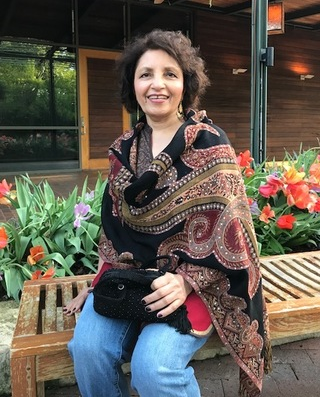

<div class="flex-conatiner">

    <div id="design-block">
        <div class="row">
            <div class="column">
                <div style="float:left">
                    
                
                
                <div id="title">
                    <h1>Manju R. Goyal, M.D.</h1>
                    Board Certified Psychiatrist, Fellow of APA
                </div>
            </div>
            </div>
        
       
        <div class="column">
            <div class="page-links" style="float: right">
                <a [routerLink]="['']">Home</a>
                <a [routerLink]="['/specialties']">Specializations</a>
                <a [routerLink]="['/process']">Process</a>
                <a [routerLink]="['/insurance']">Insurance</a>
                <a [routerLink]="['/location']">Location</a>
                <a [routerLink]="['/contact']">Contact</a>
            </div>
        </div>
        </div>
    </div>


        <!-- <div class="row">
            <div class="column1">
                <div class="picture" style="float:left">
                    
                    <h1>Manju R. Goyal, M.D.</h1>
            Board Certified Psychiatrist, Fellow of APA
                </div>
            </div>
                
            <div class="column2">
                <div id="background-info" style="float:right">
                    <p><strong>Dr. Manju R. Goyal</strong> is a board-certified psychiatrist who cares deeply for her patients and seeks to help each individual 
                    acquire life-long coping skills. She completed her medical school with Bachelor of Medicine and Bachelor of Surgery from 
                    Government Medical College, Patiala, India in 1975. Dr. Goyal then completed her Psychiatry residency training at St. Vincent’s 
                    Medical Center of North Richmond Staten Island, New York in 1981. After her training, she started practicing in the Dallas area in 
                    1982, she and currently operates a solo outpatient private practice of Psychiatry. She is also currently active in many local and 
                    national psychiatric organizations (American Psychiatric Association (APA), Depression Care Managers (DCMS), Texas Society of Psychiatric 
                    Physicans (TSPP) and Dallas Area Women’s Psychiatrists, etc.).</p>
                
                    <p><strong>From 1982 to 2006</strong>, Dr. Goyal worked in various outpatient and inpatient settings including hospitals and a large group practice (BentTree 
                    Psychiatric Associates). She worked diligently towards getting her expertise in treating major psychiatric illnesses, also raising a family 
                    of 3 children at the same time. In 2006, Dr. Goyal became more passionate about the therapy aspect of psychiatric treatment. She ventured 
                    into yoga training, which led her to explore the power of mindfulness through <a [routerLink]="['/specialties']" id="specializations"><u>Cognitive Behavioral 
                    Therapy (CBT)</u></a> and <a [routerLink]="['/specialties']" id="specializations"><u>Dialectical Behavioral Therapy (DBT)</u></a>.  From 2012 onwards, 
                    she has trained extensively and received various CBT and DBT certifications.</p>

                    <p>With 30 years experience, Dr. Goyal believes that a combination of medication and therapy works the best for helping patients achieve their goals.</p>
                </div>
            </div>
        </div> -->
        
        
    </div>

    <!-- <div class="row">
        <div class="column">
            <h2 id="maps-heading"><u>Course Maps</u></h2>
            <div class="links" style="float:left">
                <a href="../../assets/images/new 10k map.png" title="View Map" target="_blank"><u>View 10K Race Map</u></a>
                <br>
                <br>
                <a href="../../assets/images/new 5k map.png" title="View Map" target="_blank"><u>View 5K Race Map</u></a>
            </div>
        </div>
            
        <div class="column">
            
            <div id="caption-raceStart" style="float:right">
                Some of the over 250 runners who competed in the 2019 Stampede.
            </div>
        </div>
    </div> -->